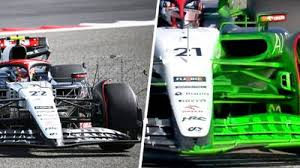
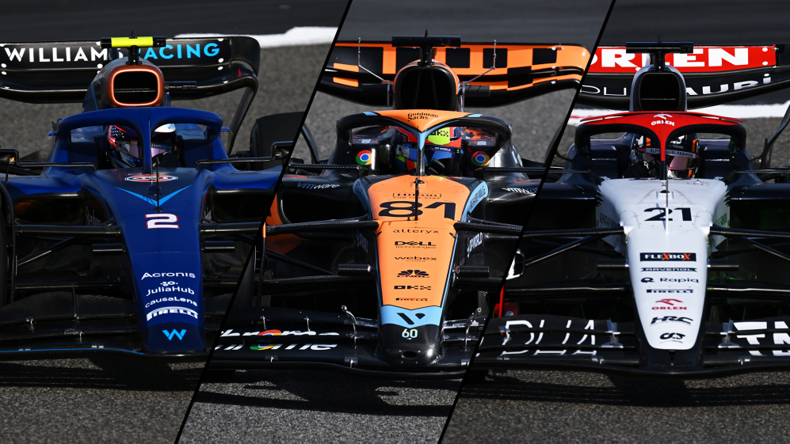
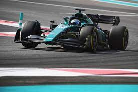
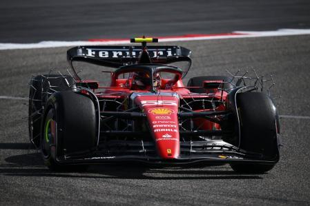
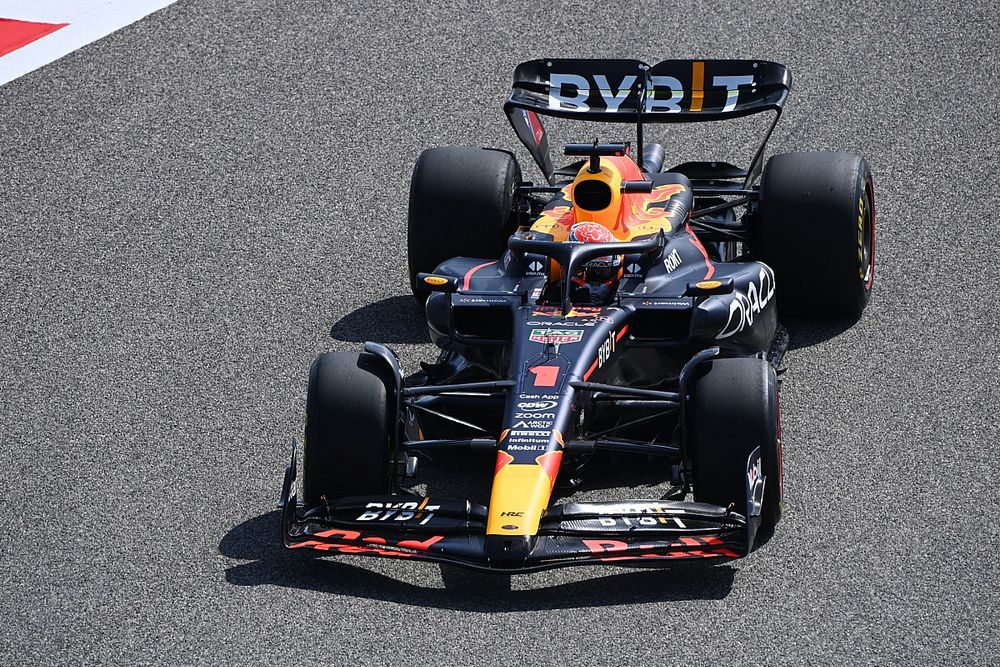

  Acabamos de presenciar hace unos días los tests de pretemporada de la F1 2023 en el circuito de Bahrein. Son las primeras tomas de contacto con estos nuevos coches antes de la primera carrera de la temporada. Como hemos podido observar durante los 3 días de tests, cada escudería ha seguido con la misma línea de estilo y diseño que eligieron para sus coches la pasada temporada, aunque con algunos cambios y mejoras. Durante estas días los equipos realizan pruebas de todos los componentes del coche (motor, rendimiento, aerodinámica, chasis, fiabilidad) e intentan aprender junto al piloto sobre estos nuevos coches, como sacar el 100% de él y encontrar sus fallos o deficiencias para mejorarlas durante la temporada.
 En estos nuevos tests de pretemporada, hay un equipo que ha sorprendido, tanto a la gente del pitlane como a los fans de la Fórmula1, y ese equipo es el Aston Martin de Fernando Alonso y Lance Stroll. Los demás equipos están atónitos con el ritmo que parece tener el AMR23, sobre todo cuando hicieron unas tandas de simulación de carrera siendo incluso más rápidas que las del equipo Ferrari, debido también a la alta degradación de los neumáticos por parte de los Tifosi. A día de hoy, con tests ya concluidos, se cree que Aston Martin puede ser el tercer equipo de la parrilla este mismo fin de semana en la primera carrera del campeonato en el circuito de Barhein.
 El equipo del que vamos a hablar ahora ha tenido una pretemporada algo distinta a la del año pasado, y este equipo es el equipo Ferrari, que además este año cuenta con un nuevo jefe de equipo, Frédéric Vasseur, el cual ha llegado nuevo a la escudería tras las polémicas del año pasado entre Mattia Binotto y Charles Leclerc. En estos tests los de Maranello no han estado muy cómodos el primer día por unos problemas de subviraje en el coche. El tercer día realizaron tandas de simulación de carrera con los tres neumáticos que usarán en el gran premio este mismo fin de semana, y lo que sorprendió fue la alta degradación que sufren los neumáticos en el coche, todo lo contrario a lo que desgantan sus competidores más cercanos como Red Bull o Aston Martin.
 La escudería que ha salido con mejores sensaciones de los tests de pretemporada es sin duda la capitaneada por Christian Horner, Oracle Red Bull Racing, con Max Verstappen y Sergio Pérez como pilotos. Durante los tres días de tests no les han aparecido casi ningún problema en el coche, y por lo tanto han podido estar rodando sin parar. Se han econtrado muy fuertes en la mayoría de aspectos como en ritmo de clasificación y carrera, y la degradación de los neumáticos, lo que genera en el paddock un miedo general a que los Red Bull sean un equipo imparable durante toda la temporada. Esperamos todos ansiosos a que los coches se pongan a rodar este fin de semana en el circuito de Bahrein para despejar todas las dudas que existen.